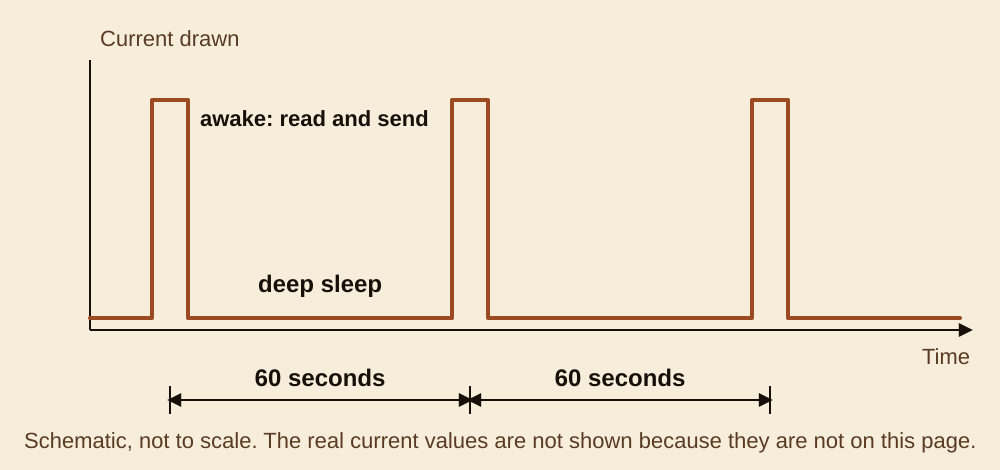
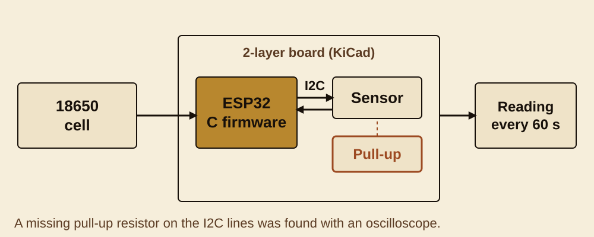
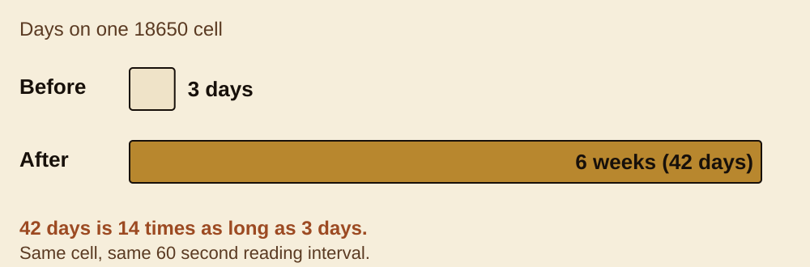

Hardware
Low-power wireless sensor node
A battery sensor that went from 3 days to 6 weeks on one charge.
- No public link.

In numbers
- 3 days to 6 weeksbattery life on one 18650 cell
- 14xlonger on a charge
- 60 sbetween reads
- 2layer board
The problem
A wireless sensor is only useful if it keeps running. The first version of this node lasted about 3 days on one 18650 cell. A sensor that needs a fresh battery every few days is a chore, not a sensor.
The goal was a node that reads a sensor once a minute and runs for weeks on the same cell.
The approach
The ESP32 draws far more current awake than asleep, so the fix is to be awake as little as possible. The firmware, written in C, puts the chip into sleep, wakes it every 60 seconds, takes one reading, sends it, and goes back to sleep.
I also drew the board myself in KiCad, as a 2-layer design.
That plan changed battery life from 3 days to 6 weeks. Six weeks is 42 days, which is 14 times as long.
How it works
The battery cell powers the board. On the board, the ESP32 runs the C firmware and talks to the sensor over I2C, a two-wire bus. Every 60 seconds it wakes, reads, sends and sleeps again.

Why sleeping saves so much
Battery life depends on the average current, not the peak. A node that is awake for a moment each minute and asleep the rest of the time has an average close to its sleep current, because the time at the high current is so short. The schematic at the top of the page shows the shape: tall, thin bursts on a very low floor.
This is also why every extra moment awake costs something. Reading the sensor, waiting for it and sending the reading all happen while the chip is on, so the code keeps that window short.
The missing pull-up
I2C lines are only pulled low by the chips on the bus. A resistor, called a pull-up, has to bring them back high. One was missing on this board, and I found it with an oscilloscope. A scope shows the line itself, which a debugger on the firmware cannot.
Results

| Measure | Result |
|---|---|
| Battery life | 3 days before, 6 weeks after (42 days, 14 times longer) |
| Cell | One 18650 |
| Reading interval | 60 seconds |
| Board | 2 layers, drawn in KiCad |
| Bug found | A missing I2C pull-up, found with an oscilloscope |
There is no public repo or demo for this one, and I did not photograph the board, so this page shows diagrams only.
What I did
- Stretched battery life from 3 days to 6 weeks on one 18650 cell.
- The ESP32 sleeps between reads, one every 60 seconds.
- Wrote the C firmware and drew a 2-layer board in KiCad.
- Found a missing pull-up resistor with an oscilloscope.
What I learned
For a battery device, the schedule matters more than the code. Deciding how long the chip is awake, and how often, set the battery life more than any single optimisation.
Hardware bugs hide from software tools. A missing resistor looks like a flaky sensor until you look at the signal with a scope.
Measure the result in the units that matter. "3 days to 6 weeks" says more than a current figure, because it is what someone holding the device would see.